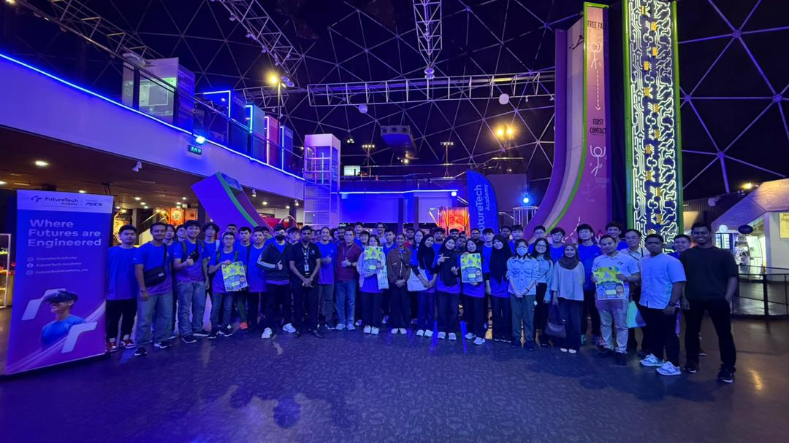

|
|
WON WANQI CHLOEDIPLOMA IN INFORMATION TECHNOLOGYFUTURETECH ACADEMY PRESIDENT OF STUDENT COUNCIL 25/26PENANG SKILLS DEVELOPMENT CENTRE (PSDC) |
I'am currently pursuing my higher education at FutureTech Academy (FTA) powered by Penang Skills Development Centre (PSDC) , where I am stduying in field of Information Technology (IT) . My studies at FTA focus on both theoretical knowledge and pratical skills, allowing me to gain hands-on experience through projects and technical training.
| Beach Cleaning | Visit To TechDome |
|---|---|
 |
 |
I'm studied at SMK SACRED HEART , where I spent several important years shaping my character,mindset and interests. My secondary school journey was not only about academic learning, but also personal development through various experiences and challenges.
Balancing studies with school activities helped me become more organized and independent. These skills later became very useful in my further studies and daily life.
I involved in various school activities, which allowed me to interact with different people and work part of a team. Through these experience, I improved my communication skills and gained confidence in expressing my ideas. I learned how to accept feedback, improve continuously, and stay motivated even when challenges arose.
I actively participated in several school competitions, which allowd me to step out of my comfort zone and apply what I have learned in real situations. These competitions helped me develop problem-solving skills, critical thinking, and the ability to work under pressure. Preparing for competitions also taught me perseverance, discipline, and effective time management.
To get my contact please click here.
Here!